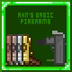
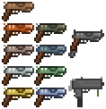

 Ahndrek's Basic Firearms 
A Terraria mod that adds in a few early game gun-type ranged weapon for the Ranger class.
Meant to help those who want to do a gun-only playthrough or are looking for more variety early game.
A Terraria mod that adds in a few early game gun-type ranged weapon for the Ranger class.
Meant to help those who want to do a gun-only playthrough or are looking for more variety early game.
Showcase of all added weapons to the mod
Terraria Forums Link
Current Mod Stats:

See the Terraria forums post for more info, like DPS and Banners to help support the mod!